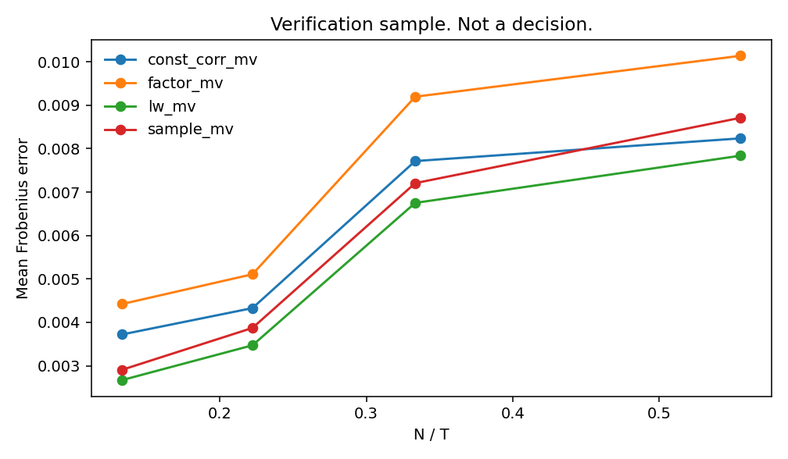
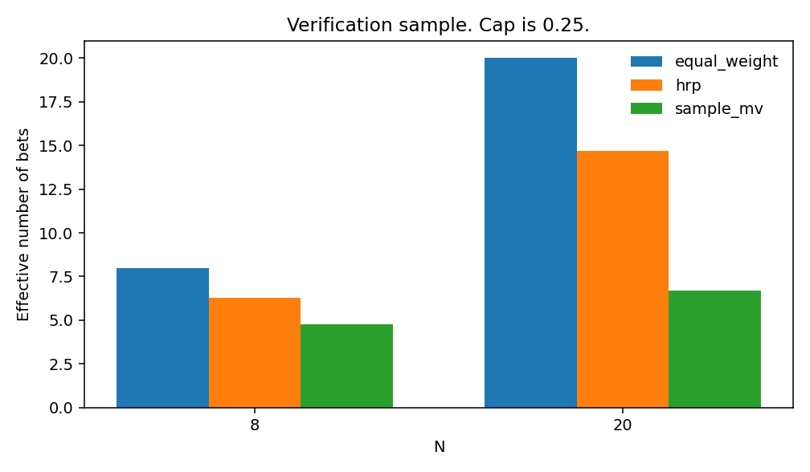

Synthetic data only. The numbers below are the verification sample in this repository. They are not a hypothesis decision. The verification label is NOT_A_DECISION_SAMPLE.
For each locked cell and seed, Δ is the paired difference of mean out-of-sample Frobenius error: sample covariance minus Ledoit–Wolf. The cell summary is the median across seeds. The primary estimand is the N/T-weighted mean of those medians on the stratum N/T ≥ 0.40:
Θ_H1 = Σ_{c in stratum} (N/T)_c · median_s(Δ_{c,s}) / Σ_{c in stratum} (N/T)_c
The stratum is fixed: N=20, T=36, low, N=20, T=36, moderate, N=20, T=36, block, N=20, T=36, high, N=50, T=36, low, N=50, T=36, moderate, N=50, T=36, block, N=50, T=36, high, N=50, T=60, low, N=50, T=60, moderate, N=50, T=60, block, N=50, T=60, high, N=50, T=120, low, N=50, T=120, moderate, N=50, T=120, block, N=50, T=120, high. Sixteen cells. Seeds 0–29 are the decision sample. Seeds 9000–9004 are the pilot and are not reused.
Uncertainty for Θ is a seed bootstrap: resample seeds inside each cell, recompute medians, recompute Θ. A block bootstrap of a single path is not the test. Block length 6 is used only for within-path Sharpe intervals.
The minimum practical effect is a 15% reduction in sample-covariance Frobenius. HOLDS requires the 5th percentile of Θ to be positive and the point estimate to clear that 15% bar. Power of this compound rule is computed at 2× the minimum effect, under a Gaussian homoskedastic model fit to the pilot. The target is 80%. Power exactly at the 15% boundary is reported and is not the gate: at the boundary the point-estimate rule rejects about half the time even when the interval excludes zero. If pilot variance understates the N=50 cells, reported power is an upper bound. If design power is below 80%, a complete sample is still INCONCLUSIVE_UNDERPOWERED.
A 70% cell-count vote is not used. It had no power calculation and it can be passed by many tiny effects.
Linkage candidates are exactly ('single', 'average'). The inner window is the last 12 months of the training sample. The fit window must be at least 24 months, otherwise linkage is single and the skip is recorded. The inner metric is realized_variance. Ties go to single. Ledoit–Wolf has no shrinkage grid; the intensity is the analytic estimate and is stored, not chosen. The factor estimator keeps 1 principal component. Lookbacks (36, 60, 120) are experimental factors, not tuned parameters.
Every method, including HRP, is projected onto the same set: weights sum to 1, weights are non-negative, and no weight exceeds max(0.25, 1/N). The quadratic programs use SLSQP, ftol 1e-12, maxiter 500, with those bounds. If the solver fails or the projection is non-finite, the weight is equal-weight and optimizer_failed is true. The cap rule is feasible for every N in the grid because N·cap ≥ 1.
This is not a hidden state model. On the training sample only, 12-month mean volatility and mean absolute correlation are computed. Quantiles at 0.80 are taken from windows that end before the decision window. Stress is declared if either current feature exceeds its quantile. Otherwise the state is calm. If fewer than 12 calibration points exist, the state is calm. Stress shortens the covariance window to the last 24 months. Calm uses the full lookback. Full-sample smoothed probabilities are not computed.
H5 is a comparison of Ledoit–Wolf minimum variance with that switch against the same estimator with the switch off. It is supported only if shocked cells show a variance reduction of at least 10% and unshocked cells do not show a variance increase above 5%. H5 is not folded into Θ_H1.
H2 is the unweighted mean, across stratum cells, of the seed-median gap in effective number of bets (HRP minus sample minimum variance) at zero cost. The practical bar is +1 bet. H3 is not a performance claim. A reversal is a sign change in the seed-median net-Sharpe gap between HRP and sample minimum variance at 0 bps and at 20 bps, and both gaps must clear 0.05 in absolute value.
Θ_H1 uses Gaussian draws and only the four named correlation structures (equicorrelation 0.10, 0.30, 0.60, and a two-block matrix). It does not include the random full-rank correlation, the t distribution with 4 degrees of freedom, or the scale mixture (probability 0.05 of multiplying the draw by 3; unconditional variance factor 1.40). Those are stresses. A result that changes sign there limits the claim to the primary design. It is not averaged back into Θ after being seen.
Decision seeds required: 30. This run has 3 and 4 of 16 stratum cells. The status function is required to return NOT_A_DECISION_SAMPLE. On the cells that were run, the partial Θ is 6.4% of sample Frobenius, against a 15% bar, and the seed-bootstrap 5th percentile is -0.000134. That interval includes non-positive values. Power at the minimum effect is 0.507. Power at twice the minimum effect is 1.000 under the pilot variance; that second number is not evidence about N=50.
| item | value |
|---|---|
| h1_status | NOT_A_DECISION_SAMPLE |
| theta_h1 | 0.0005619398608186241 |
| theta_h1_p05 | -0.00013426978703103972 |
| theta_h1_p95 | 0.0015752981034246993 |
| mean_sample_frobenius | 0.008713628681810793 |
| relative_h1 | 0.06448976440683567 |
| pilot_sigma | 0.0009347739463745635 |
| pilot_mean_sample_frobenius | 0.008399413825489676 |
| mde_abs | 0.0012599120738234514 |
| power_at_design_alternative | 1.0 |
| power_at_mde | 0.507 |
| h2_status | NOT_A_DECISION_SAMPLE |
| theta_h2 | 8.633103647934892 |
| theta_h2_p05 | 8.127348654300615 |
| theta_h2_p95 | 9.308677401685376 |
| h3_reversal_cells | 0 |
| stratum_cells_present | 4 |
| stratum_cells_required | 16 |
| seeds_present | 3 |
| seeds_required | 30 |
| method | frobenius | eig_l1 | risk_abs | eff_bets | turnover | failed_frac |
|---|---|---|---|---|---|---|
| const_corr_mv | 0.0060 | 0.0090 | 0.0001 | 6.4385 | 0.0289 | 0.0000 |
| equal_weight | 14.0000 | 0.0111 | 0.0000 | |||
| factor_mv | 0.0072 | 0.0102 | 0.0001 | 6.6573 | 0.0386 | 0.0000 |
| hrp | 0.0052 | 0.0068 | 0.0001 | 10.4625 | 0.0631 | 0.0000 |
| inverse_vol | 12.5017 | 0.0181 | 0.0000 | |||
| lw_mv | 0.0052 | 0.0068 | 0.0001 | 7.5708 | 0.0364 | 0.0000 |
| sample_mv | 0.0057 | 0.0072 | 0.0001 | 5.7310 | 0.0433 | 0.0000 |


| innovation | const_corr_mv | equal_weight | factor_mv | hrp | inverse_vol | lw_mv | sample_mv |
|---|---|---|---|---|---|---|---|
| gaussian | 0.0054 | 0.0079 | 0.0085 | 0.0085 | 0.0089 | ||
| mix | 0.0149 | 0.0238 | 0.0153 | 0.0153 | 0.0249 | ||
| t4 | 0.0067 | 0.0085 | 0.0079 | 0.0079 | 0.0091 |
| shock | detector | variance | frobenius |
|---|---|---|---|
| False | 0.0004 | 0.0085 | |
| True | 0.0004 | 0.0089 | |
| corr | False | 0.0005 | 0.0128 |
| corr | True | 0.0005 | 0.0125 |
| vol | False | 0.0009 | 0.0315 |
| vol | True | 0.0009 | 0.0303 |
Source: github.com/chrislernunes/atlas. Constants: src/study/protocol.py.